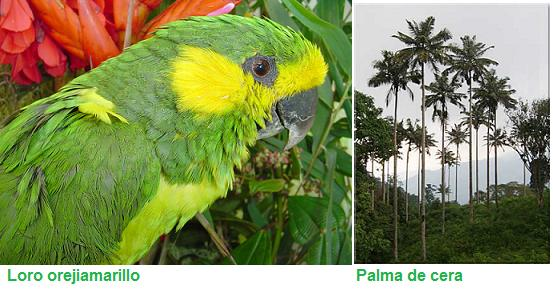

Fauna y flora en su viacrucis
La temporada de semana santa en Colombia se convierte en un verdadero calvario para varias especies de fauna y flora. Las poco bienaventuradas son la palma de cera, la iguana, la hicotea, el caimán, el chigüiro y el águila cuaresmera.
La cuaresma es el periodo de tiempo en el que los católicos se preparan para la pascua, incluye cuarenta días antes del viernes santo sin contar los domingos. Durante este período, pero especialmente los viernes, y los “días santos”, los católicos no comen carnes rojas lo que hace que muchas especies silvestres sean cazadas y consumidas por considerarse “carnes blancas”. Este es el caso del caimán, al que muchos vendedores lo hacen pasar como pescado. El chigüiro, (Hydrochoerus hydrochaeris) conocido en otras partes como capibara, sufre la misma suerte.
Otras especies que pasan por este viacrucis es la iguana (Iguana iguana), siendo la especie más perseguida por el consumo de sus huevos y su carne. Esta costumbre se acentúa en la ciudad de Santa Marta. Sin embargo, la iguana no se encuentra en un estatus de conservación tan delicado como las tortugas hicotea y morrocoy. En el caso de la tortuga hicotea (Trachemys scripta callirostris) su temporada de desove coincide con la festividad católica, lo que ha contribuido al decaimiento de sus poblaciones. Esta tortuga se encuentra solo en las zonas cenagosas del norte de Colombia y el occidente de Venezuela. La tortuga morrocoy cuenta con una distribución más amplia en Panamá y Surámerica, es conocida también como tortuga sabanera de patas rojas.
El águila cuaresmera es otro animal que también termina en las mesas de muchos católicos quienes ven su llegada migratoria en esta temporada como un reemplazo de la carne roja. Las águilas cuaresmeras son en realidad gavilanes de dos especies Buteo swainsoni y Buteo platypterus Estas rapaces realizan una migración desde los Estados Unidos y Canadá hasta el trapecio Amazónico, en el caso de Buteo platypterus, y hasta la Argentina en el de Buteo Swainsoni.
Durante su ruta migratoria las águilas cuaresmeras pasan por el Cañón de Combeima, un lugar cercano a la ciudad de Ibagué. Allí los campesinos les disparan a las rapaces porque le atribuyen poderes medicinales a su grasa y porque el sabor de su carne es igual a la del pescado.
Las matanzas excesivas durante la cuaresma tienen grandes efectos en los ecosistemas. Si bien es cierto que los organismos gubernamentales han tomado medidas contra algunas de estas prácticas cada Semana Santa se siguen sirviendo tortugas, iguanas y águilas cuaresmeras en las mesas.

Pero la flora tampoco se salva. La palma de cera (Ceroxylon quindiuense), árbol nacional de Colombia, es la damnificada en esta época porque sus hojas se cortan para elaborar los ramos para la celebración del Domingo de Ramos. Esta celebración abre la Semana Santa y conmemora la entrada triunfal de Jesús a Jerusalén. Desafortunadamente para muchas especies este domingo marca la entrada triunfal a la depredación.
La palma de cera es la especie de palma que crece a mayor altura sobre el nivel del mar. Ocupa altitudes desde los 2.500 a 2800 m.s.n.m. La especie también es endémica de Colombia. Habita más específicamente el Valle de Cocora en el departamento de Quindio. Con la destrucción de la palma de cera sufre el loro orejiamarillo amarillo (Ognorhynchus icterotis), porque los frutos de la palma es el alimento de esta ave, además que en ellas socializan, crían sus polluelos y se refugian.
Cada año, para el Domingo de Ramos, los humanos cortan las palmas de cera y debilitan el hábitat de esta especie endémica de loro. Para 1999 solo se encontraron 82 loros, aunque con las medidas restrictivas sobre la tala y comercialización de la palma de cera se puedo salvar al loro orejiamarillo de una casi segura extinción. En 2004 el número había subido a 500, pero este número no es suficiente para evitar la extinción. Una especie se considera amenazada si tiene menos de 10 mil individuos.

La ética de la Iglesia es especiecista
Hasta el momento se han llevado muchas campañas que buscan detener el impacto ambiental de las celebraciones católicas sobre la fauna y flora colombiana. Muchas personas han optado por comprar espigas de trigo en lugar de palmas de cera o usar pañuelos blancos para el domingo de ramos. Sin embargo, falta un mayor apoyo del clero, el cual debería negarse a bendecir ramos de palma de cera y exhortar públicamente a sus fieles para que no consuman animales silvestres en la cuaresma. ¿Dónde quedó la defensa de la vida que tanto proclama la Iglesia Católica? Parece que la prédica de que la vida es sagrada se reserva para los cigotos recién formados, blastocistos humanos, embriones que aún no han desarrollado sistema nervioso y los enfermos con muerte cerebral, ¿y qué de los organismos que sí pueden sentir dolor?
En este punto recuerdo las palabras de Carl Sagan respecto a la defensa de la vida de muchas organizaciones:
“Hoy por hoy no existe el derecho a la vida en ninguna sociedad de la Tierra, ni ha existido en el pasado (con unas pocas excepciones, como los jainistas de la India): criamos animales de granja para su sacrificio, destruimos bosques, contaminamos ríos y lagos hasta que ningún pez puede vivir en ellos, matamos ciervos y alces por deporte, leopardos por su piel y ballenas para hacer abono, atrapamos delfines que se debaten faltos de aire en las grandes redes para atunes, matamos cachorros de foca a palos, y cada día provocamos la extinción de una especie. Todas esas bestias y plantas son seres vivos como nosotros. Lo que (supuestamente) está protegido no es la vida en sí, sino la vida humana.”
Miles de millones. Miles de millones. Página 92.
Desde la ética especiecista, el mundo es visto como fuente de recursos dispuestos para el uso del hombre. Los especiecistas consideran la naturaleza como pacientes morales inertes, no como agentes dinámicos, pues no existe comunidad moral con la naturaleza; ella es solo fuente de recursos disponible para el consumo. La ética sólo regula las relaciones entre los hombres, no con los otros seres.
La perjudicial idea que la naturaleza es una despensa disponible para los humanos tiene apoyo en los primeros versículos de la Biblia, los cuales indican que la naturaleza fue hecha para el hombre:
“Y los bendijo Dios, y les dijo: Fructificad y multiplicaos; llenad la tierra, y sojuzgadla, y señoread en los peces del mar, en las aves de los cielos, y en todas las bestias que se mueven sobre la tierra. Y dijo Dios: He aquí que os he dado toda planta que da semilla, que está sobre toda la tierra, y todo árbol en que hay fruto y que da semilla; os serán para comer.
Y a toda bestia de la tierra, y a todas las aves de los cielos, y a todo lo que se arrastra sobre la tierra, en que hay vida, toda planta verde les será para comer. Y fue así.”
Según lo anterior podríamos concluir que la iglesia Católica es especiecista. Sin embargo, debe reconocerse que contaminar el ambiente fue calificado como un pecado moderno por el Papa Benedicto XVI en marzo de 2008. Aún así la óptica ética de la iglesia Católica sigue siendo principalmente especiecista, por eso hasta el momento no se ha escuchado una condena del Vaticano a las corridas de toros o a las cacerías hechas en Colombia por motivo de la cuaresma, que ya mencionamos anteriormente, por ejemplo.
En el mundo moderno los problemas ambientales han llegado a ser también parte del problema ético. Los seres humanos hemos cambiado el ambiente tan dramáticamente, especialmente desde la revolución industrial, al punto que hemos puesto en peligro la existencia de la vida sobre la tierra. Esto es un motivo de preocupación ética.
Por esto es importante que cada persona se cuestione sobre las consecuencias previsibles a corto, mediano y largo plazo de sus actos de consumo. Las personas debemos preguntarnos qué podemos hacer al respecto. La ética especiecista que nos ofrece la Biblia no es suficiente para abordar los problemas actuales, y un enfoque humanista secular seria más conveniente.
Es lamentable que se sigan alterando los ecosistemas naturales de forma tan agresiva como consecuencia de una celebración religiosa, más lamentable aún que la Iglesia no las condene con la misma energía que utiliza para otras cuestiones, como el uso del preservativo, por ejemplo. Añadiría también que la enconada oposición a la planificación familiar contribuye a la sobrepoblación, y esta última es el pricipal factor de deterioro ambiental. Solo me resta esperar que año tras año las personas tomen conciencia de su entorno y de sus acciones y que el futuro nos permita ocupar un espacio junto con las hicoteas, las águilas cuaresmeras y los loros orejiamarillos. Solo tiempo responderá.
Volver a la sección Sociedad y religión
Comentarios
Comments powered by Disqus